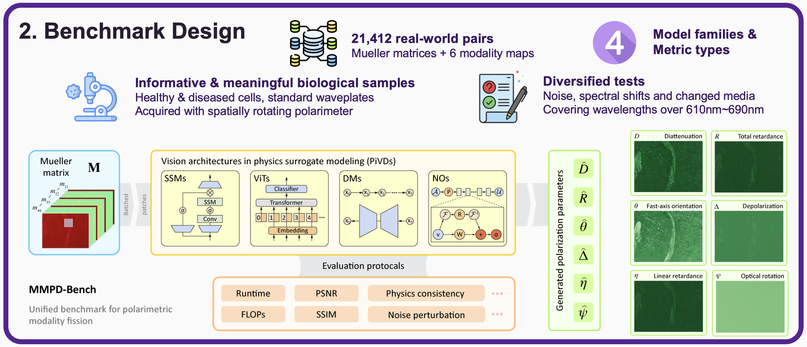
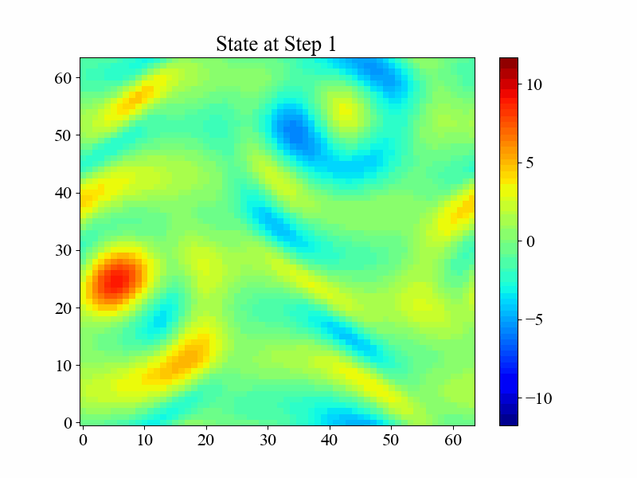
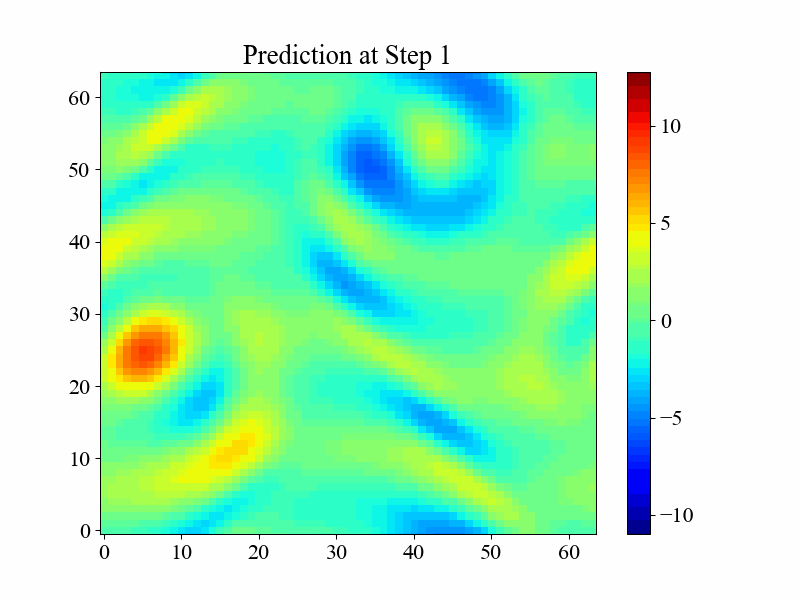
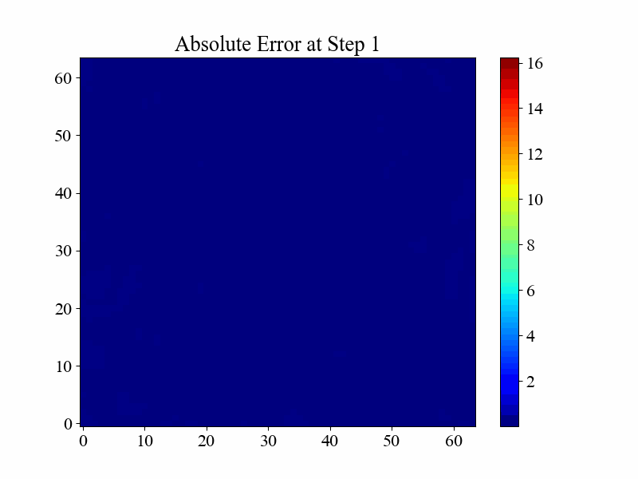
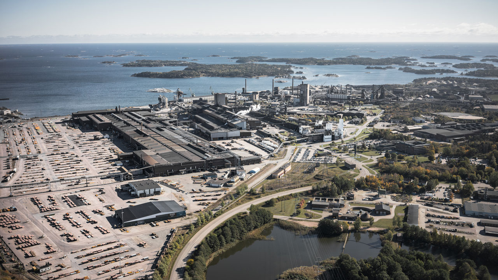

Hello, I’m
Yi He 何怡
I am currently a PhD student in AI for Dynamical Systems at University College London, expecting to graduate in 2027–2028. I also work as a research engineer in UCL’s Dynamic Systems Lab.
My research focuses on world models and multivariate / multimodal time-series forecasting, with broader interests in efficient multimodal representation, 3D state reconstruction, learning dynamics, and temporally consistent video generation.
World models
Multivariate time series
Multimodal time series
AI for science
World modelsMultivariate time seriesMultimodal time seriesLearning dynamics3D state reconstruction
01
Selected systems
Research that moves between representation and reality.




LIVE · PREDICT · OPTIMISEIntelligent European Steel-Making Systems
An end-to-end predictive pipeline for process-gas management—from forecasting and storage to real-time front-end reporting.
Journal article · CiteScore 15.8
2TB+research data generated & maintained
3ICML / ICLR papers led
6+invited and conference talks
2027–28expected PhD graduation
02
Research output
Publications
ICML
MMPD-Bench: Bridging Multimodal Fission with Multi-Polarimetric Modalities Decomposition
Yi He*, Z. Zhao*, Y. Yang, X. Cheng, C. He, Y. Hu
* Equal contributionICLR
Information Shapes Koopman Representation
X. Cheng*, W. Yuan*, Y. Yang, Y. Zhang, S. Cheng, Y. He, Z. Sun
ICLR
Multilevel Control Functional
K. Li, Y. Yang, X. Cheng, Y. He, Z. Sun
ICML
Chaos Meets Attention: Transformers for Large-Scale Dynamical Prediction
Yi He*, Y. Yang*, X. Cheng*, H. Wang, X. Xue, B. Chen, Y. Hu
* Equal contributionICML
Tensor-Var: Efficient Four-Dimensional Variational Data Assimilation
Y. Yang, X. Cheng, D. Giles, S. Cheng, Y. He, X. Xue, B. Cheng, Y. Hu
ICLR
Learning Chaos in a Linear Way
X. Cheng*, Yi He*, Y. Yang, X. Xue, S. Cheng, D. Giles, X. Tang, Y. Hu
* Equal contributionPRE
On Stability and Robustness of Diffusion Posterior Sampling for Bayesian Inverse Problems
Y. Yang, X. Cheng, Y. He, K. Li, W. Yuan, Z. Sun
PreprintAEI
Constrained Factorized Dilated Temporal Convolutional Networks for Process Gases Management in Steel Manufacturing
Yi He, Y. Hu
Advanced Engineering InformaticsIEEE
Radar Update: A Pedestrian Navigation System with Enhanced Trajectory Performance
Y. Dai, K. Li, J. Chai, Z. Xiao, B. Yan, Y. He, W. Peng
ISCAS 2021 · Patent 20190876262.7
03
Trajectory
From physical systems to learning systems.
Research & industry
2024 — Present
Researcher · Dynamic Systems Lab, UCL
Leading AI4Science datasets and methodology benchmarks; publishing and maintaining PFNN, Chaos Meets Attention, and MMPD-Bench.
2022 — 2024
Research Assistant · Swerim AB
Built a (multivariate) AI predictive agent and full data pipeline for process-gas management in steel manufacturing.
2022 — 2023
Software Engineer Track · Morgan Stanley UK
Developed recommender systems, account databases, web applications, and backend programs in an agile workflow.
2021
MSc Research · UCL AI Centre
Designed a graphical model for policy maximum-entropy variational reinforcement learning (RL), advised by Prof. David Barber.
2019
Summer Research · University of Glasgow
Explored signal imaging for human-gesture identification using SPFT and deep-learning classification.
04
Speaking
Talks across research and industry.
AI Technology in Linearizing Nonlinear Systems
Jaguar Land Rover · Warwick, UK
Foundation Models for AI for Science & Polarization Analysis
University of Oxford · Vectorial Optics & Photonics Group
Chaos and Nonlinear Dynamics — Three-Minute Paper
University College London · CEGE
AI for Energy-Intensive Digital Twins
University College London · ISI Institute
Intelligent Digital Twins for Process Engineering
Swerim · Luleå, Sweden
AI-Assisted Energy-Rich Gas Management
ICEEE 2023 · London, UK
05
Beyond the lab
Research engineer, builder, reviewer—and curious human.
I volunteer on an LLM + RAG text-to-icon tool for special education, review for ICML, NeurIPS and ICLR, build LEGO, and chase snow across six mountains.
PyTorchJAXNumPyCluster ComputingGCPAzureGitWeb AppsSQLScientific Computing
Languages
MandarinNative
EnglishProfessional
CantoneseBasic
JapaneseBasic